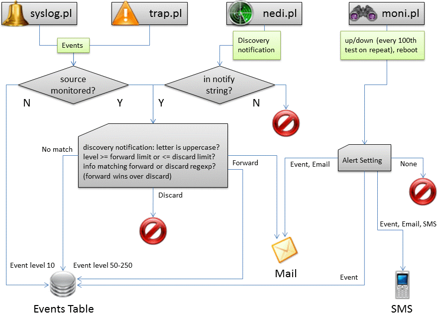

Introduction
Configure how targets should be monitored and how users are notified upon their failure. In addition you can specify if traps, syslog or discovery events should be discarded or forwarded. For discovery events you can define a coarse alert policy with the "notify" string and thresholds (CPU, Mem etc.) in nedi.conf. They can be overridden here for each target.
Usage
Traps or syslog messages of nodes or devices not added to monitoring will only create "other" (level 10) events.
The actual polling is done by moni.pl which should be started automatically. It also relies on nedi.conf (can be edited in System-Files), where you can set the pause between polls, how many tests a device can fail before it is marked down and how emails should be sent.
If a target is reported to be down an incident is created with the start time set to the time it's detected at. The end time will be added automatically, when the target is responding again.
This daemon can be stopped and started from System-Services after changing any settings to quickly see the results. Otherwhise you'll have to wait until the next polling cycle starts.
A shaded background indicates that the target is not found as node or device anymore.
Message Flows

Details
- Add targets from Devices List or Status (uptime is default for SNMP devices) and Nodes List or Status respectively (TCP ping is default for nodes). They'll show up here afterwards.
- http/https: You can add a string to send like index.html and a regexp matching a successful response. Only a SYN check is performed, if you don't.
- dns: you can send a hostname and a regexp matching the expected IP address.
- ntp: you can send RFC2030 fields like "Stratum" and enter a match ^[1-5]$ to detect if your ntp server lost sync.
- The concept behind Monitoring-Setup is to use the filter to rapidly change settings on a group of targets. Click on a targetname, test, alert or manually set a filter and click "Show".
- Clicking "Update" applies the settings to the displayed targets.
- Clicking "Delete" removes the displayed targets from monitoring.
 Change the test (a tcp ping to the appropriate port or uptime) and how many lost replies mark it down.
Change the test (a tcp ping to the appropriate port or uptime) and how many lost replies mark it down.
- Select email or SMS alerts, just have incidents create Monitoring-Events or nothing at all. If you select a repeat option, the alert is resent every 100th failed test and in addition you can adjust latency warnings for slower targets.
- To check for more than just open ports,
 Lets you enter an a string to send ("GET /" or a FQDN) and
Lets you enter an a string to send ("GET /" or a FQDN) and  the expected answer.
the expected answer.
 Select Forward and enter a regexp to match the message and/or select a minimum event level to get a mail on matching events. Alternatively you can select Discard, a maximum event level and/or a regexp and matching events will not even be stored in the DB (A forward match of a target overrules a discard match. Level limit can only be used to forward OR discard but not both).
Select Forward and enter a regexp to match the message and/or select a minimum event level to get a mail on matching events. Alternatively you can select Discard, a maximum event level and/or a regexp and matching events will not even be stored in the DB (A forward match of a target overrules a discard match. Level limit can only be used to forward OR discard but not both).
 Updates target IP address from devices or nodes, in case they've changed.
Updates target IP address from devices or nodes, in case they've changed.
 Sets dependency info, if available via links or device information (in case of node targets). After that, the dependencies can be adjusted on each target individually.
Sets dependency info, if available via links or device information (in case of node targets). After that, the dependencies can be adjusted on each target individually.
 Reset the availability counters (lost & ok) once a year if you need to know annual availability for example.
Reset the availability counters (lost & ok) once a year if you need to know annual availability for example.